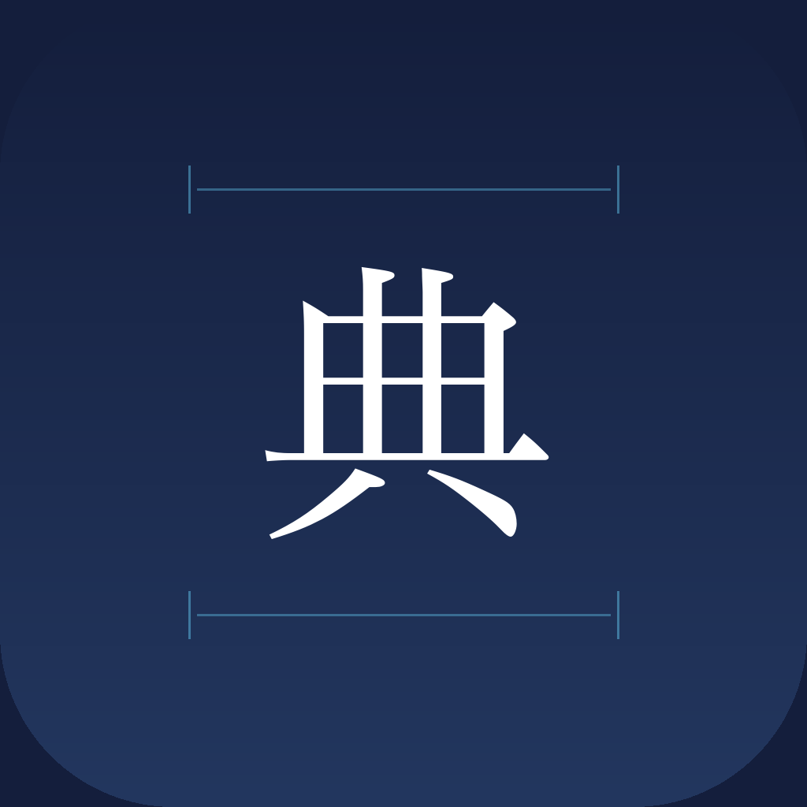

古典籍・近代活字を、スマホで読む。 Read classical & modern Japanese texts on your phone.
国立国会図書館のAIモデルを活用した、完全オフラインのOCRアプリ。 Fully offline OCR app powered by the National Diet Library's AI models.
古典籍OCR（くずし字）と近代OCR（活字）の動作例 Classical OCR (kuzushiji) and Modern OCR (printed text) in action
検出: RTMDet-S / 認識: PARSeq Detection: RTMDet-S / Recognition: PARSeq
江戸期の版本・写本に最適化。7000文字以上に対応。 Optimized for Edo-period woodblock prints & manuscripts. 7000+ characters.
検出: DEIMv2-S / 認識: PARSeq cascade（3モデル） Detection: DEIMv2-S / Recognition: PARSeq cascade (3 models)
明治以降の活字印刷物・手書き文書に対応。最大6.7倍高速化。 For post-Meiji printed & handwritten documents. Up to 6.7x faster.
カメラで撮影するだけ。文字を自動で検出・認識します。 Just photograph a text. Characters are automatically detected and recognized.
すべての処理はデバイス上で完結。画像やデータが外部に送信されることはありません。 All processing happens on-device. No images or data are ever sent externally.
古文を現代語に翻訳。ローカルAI（iOS 26+）またはクラウドAPIに対応。 Translate classical text to modern Japanese. Supports local AI (iOS 26+) or cloud APIs.
認識結果をテキスト・TXT・PDFでエクスポート。研究や学習にすぐ活用できます。 Export results as text, TXT, or PDF. Ready for your research and studies.
カメラまたはフォトライブラリから画像を選択 Take a photo or select from library
古典籍または近代OCRを選択 Choose Classical or Modern OCR
AIが文字を検出・認識 AI detects and recognizes text
コピー・翻訳・エクスポート Copy, translate, or export